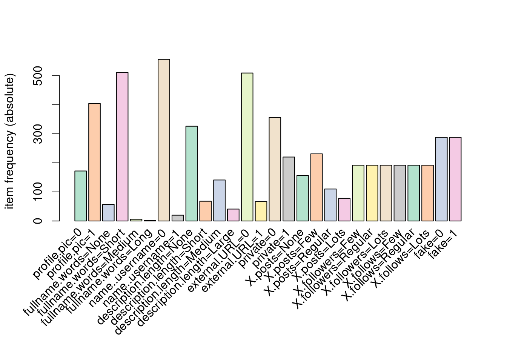
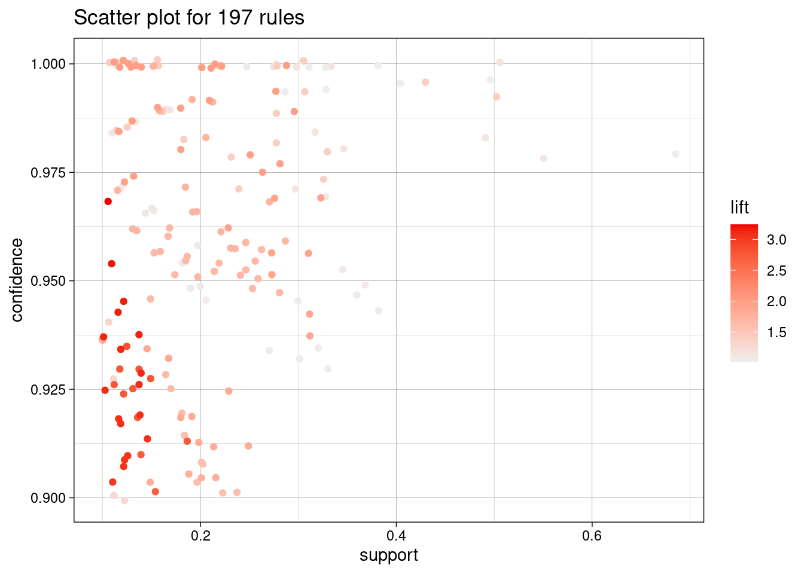
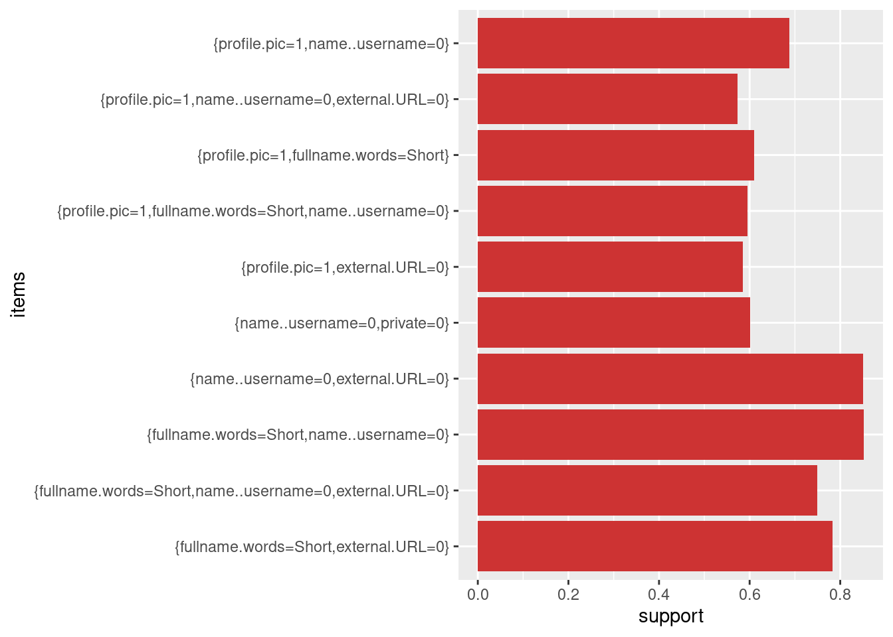

# Librerías
library(dplyr)
library(ggplot2)
library(arules)
library(arulesViz)
library(RColorBrewer) # Para el color
# Datos
insta_data <- read.csv("train.csv")Reglas de asociación
En este capítulo vamos a utilizar una técnica muy común en minería de datos que nos permitirá encontrar relaciones dentro del conjunto de datos que disponemos. Para ello, extraeremos un conjunto de reglas con el algoritmo apriori, proporcionado en la librería arules. Como en los capítulos anteriores ya hemos extraído cierta información, podemos presuponer que obtendremos reglas similares a la siguiente:
{profile.pic==0, description.length==short} => {fake}
Sin embargo, puede haber ciertas relaciones que hayamos pasado por alto. Así que con la ayuda de arules, encontraremos todas las que sean relevantes.
Preprocesamiento
Antes de poder trabajar con el conjunto de datos, deberemos transformar en factores sus atributos. Para ello, he estudiado los valores mínimos y máximos, así como la media, de cada atributo, de modo que pudiese obtener una división realista de cada grupo.
# Elimino columnas
insta_data$nums.length.fullname <- NULL
insta_data$nums.length.username <- NULL
# Convertimos en factor
insta_data$name..username <- insta_data$name..username %>% as.factor()
insta_data$profile.pic <- insta_data$profile.pic %>% as.factor()
insta_data$external.URL <- insta_data$external.URL %>% as.factor()
insta_data$private <- insta_data$private %>% as.factor()
insta_data$fake <- insta_data$fake %>% as.factor()
# Categorizamos
insta_data$description.length <- cut(insta_data$description.length,
breaks = c(-1, 0, 22, 100, Inf),
labels = c("None", "Short", "Medium", "Large"))
insta_data$fullname.words <- cut(insta_data$fullname.words,
breaks = c(-1, 0, 4, 8, Inf),
labels = c("None", "Short", "Medium", "Long"))
insta_data$X.posts <- cut(insta_data$X.posts,
breaks = c(-1, 0, 50, 200, Inf),
labels = c("None", "Few", "Regular", "Lots"))
insta_data$X.followers <- discretize(insta_data$X.followers, method = "frequency", breaks = 3, labels=c("Few", "Regular", "Lots"))
insta_data$X.follows <- discretize(insta_data$X.follows, method = "frequency", breaks = 3, labels=c("Few", "Regular", "Lots"))Una vez tenemos los datos preparados, veamos qué frecuencia absoluta tienen sus items.
itemFrequencyPlot(as(insta_data, "transactions"), type = "absolute", col = brewer.pal(8, 'Pastel2'))
Aplicando algoritmo Apriori
rules <- apriori(insta_data, parameter = list(support=0.1, conf=0.9))Apriori
Parameter specification:
confidence minval smax arem aval originalSupport maxtime support minlen
0.9 0.1 1 none FALSE TRUE 5 0.1 1
maxlen target ext
10 rules TRUE
Algorithmic control:
filter tree heap memopt load sort verbose
0.1 TRUE TRUE FALSE TRUE 2 TRUE
Absolute minimum support count: 57
set item appearances ...[0 item(s)] done [0.00s].
set transactions ...[28 item(s), 576 transaction(s)] done [0.00s].
sorting and recoding items ... [23 item(s)] done [0.00s].
creating transaction tree ... done [0.00s].
checking subsets of size 1 2 3 4 5 6 7 8 9 done [0.00s].
writing ... [3982 rule(s)] done [0.00s].
creating S4 object ... done [0.00s].print(paste("Porcentaje de reglas redundantes: ", mean(is.redundant(rules)*100)))[1] "Porcentaje de reglas redundantes: 92.9683576092416"print(paste("Porcentaje de reglas significativas: ", mean(is.significant(rules, transactions.obj, method = "fisher")*100)))[1] "Porcentaje de reglas significativas: 58.4630838774485"# Elimino reglas redundantes
rules <- rules[!is.redundant(rules)]
# Elimino reglas poco significativas
rules <- rules[is.significant(rules, transactions.obj, method = "fisher")]
# Ordeno por lift
rules <- sort(rules, by = "lift")Una vez creado el conjunto de reglas, podemos ver la información más relevante de ellas con el método summary.
Esta función nos dice que tenemos 197 reglas, con una media de soporte del 21% y un 96% de confianza.
summary(rules)set of 197 rules
rule length distribution (lhs + rhs):sizes
2 3 4 5 6 7 8
27 79 51 25 11 3 1
Min. 1st Qu. Median Mean 3rd Qu. Max.
2.000 3.000 3.000 3.629 4.000 8.000
summary of quality measures:
support confidence coverage lift
Min. :0.1007 Min. :0.9000 Min. :0.1076 Min. :1.015
1st Qu.:0.1337 1st Qu.:0.9349 1st Qu.:0.1389 1st Qu.:1.285
Median :0.1892 Median :0.9625 Median :0.1997 Median :1.688
Mean :0.2111 Mean :0.9606 Mean :0.2192 Mean :1.743
3rd Qu.:0.2726 3rd Qu.:0.9899 3rd Qu.:0.2778 3rd Qu.:1.960
Max. :0.6875 Max. :1.0000 Max. :0.7014 Max. :3.241
count
Min. : 58.0
1st Qu.: 77.0
Median :109.0
Mean :121.6
3rd Qu.:157.0
Max. :396.0
mining info:
data ntransactions support confidence
insta_data 576 0.1 0.9
call
apriori(data = insta_data, parameter = list(support = 0.1, conf = 0.9))# Observamos las cinco primeras reglas con mayor lift
inspect(rules[1:5]) lhs rhs support confidence coverage lift count
[1] {fullname.words=Short,
description.length=None,
private=0,
X.posts=None,
X.followers=Few,
X.follows=Few} => {profile.pic=0} 0.1041667 0.9677419 0.1076389 3.240810 60
[2] {description.length=None,
private=0,
X.posts=None,
X.followers=Few,
X.follows=Few} => {profile.pic=0} 0.1076389 0.9538462 0.1128472 3.194275 62
[3] {fullname.words=Short,
description.length=None,
private=0,
X.posts=None,
X.follows=Few,
fake=1} => {profile.pic=0} 0.1180556 0.9444444 0.1250000 3.162791 68
[4] {fullname.words=Short,
description.length=None,
private=0,
X.posts=None,
X.followers=Few} => {profile.pic=0} 0.1128472 0.9420290 0.1197917 3.154702 65
[5] {fullname.words=Short,
description.length=None,
private=0,
X.followers=Few,
X.follows=Few,
fake=1} => {profile.pic=0} 0.1319444 0.9382716 0.1406250 3.142119 76# Visualizamos las reglas
plot(rules)
Filtrando reglas
¿Qué tienen en común las cuentas populares?
Vamos a ver aquellas reglas del tipo “Si una cuenta tiene muchos seguidores, entonces…”
rules_pop <- subset(rules, subset = lhs %in% "X.followers=Lots")
summary(rules_pop)set of 24 rules
rule length distribution (lhs + rhs):sizes
2 3 4
3 13 8
Min. 1st Qu. Median Mean 3rd Qu. Max.
2.000 3.000 3.000 3.208 4.000 4.000
summary of quality measures:
support confidence coverage lift
Min. :0.1076 Min. :0.9375 Min. :0.1076 Min. :1.031
1st Qu.:0.1532 1st Qu.:0.9676 1st Qu.:0.1545 1st Qu.:1.404
Median :0.2726 Median :0.9870 Median :0.2847 Median :1.650
Mean :0.2418 Mean :0.9807 Mean :0.2473 Mean :1.628
3rd Qu.:0.3125 3rd Qu.:1.0000 3rd Qu.:0.3247 3rd Qu.:1.929
Max. :0.3316 Max. :1.0000 Max. :0.3333 Max. :2.000
count
Min. : 62.00
1st Qu.: 88.25
Median :157.00
Mean :139.25
3rd Qu.:180.00
Max. :191.00
mining info:
data ntransactions support confidence
insta_data 576 0.1 0.9
call
apriori(data = insta_data, parameter = list(support = 0.1, conf = 0.9))# Ordeno por soporte
rules_pop <- sort(rules_pop, by="support")
# Visualizo las primeras
inspect(head(rules_pop)) lhs rhs support
[1] {X.followers=Lots} => {name..username=0} 0.3315972
[2] {name..username=0, X.followers=Lots} => {profile.pic=1} 0.3246528
[3] {X.followers=Lots} => {profile.pic=1} 0.3246528
[4] {profile.pic=1, X.followers=Lots} => {name..username=0} 0.3246528
[5] {name..username=0, X.followers=Lots} => {fake=0} 0.3125000
[6] {X.followers=Lots} => {fake=0} 0.3125000
confidence coverage lift count
[1] 0.9947917 0.3333333 1.030576 191
[2] 0.9790576 0.3315972 1.395884 187
[3] 0.9739583 0.3333333 1.388614 187
[4] 1.0000000 0.3246528 1.035971 187
[5] 0.9424084 0.3315972 1.884817 180
[6] 0.9375000 0.3333333 1.875000 180 También podemos observar aquellas reglas que solo tienen este atributo en la parte derecha, es decir, “Si una cuenta es …, entonces tiene muchos seguidores”.
rules_pop2 <- subset(rules, subset = rhs %oin% "X.followers=Lots")
inspect(rules_pop2) lhs rhs support confidence coverage lift count
[1] {X.posts=Lots,
fake=0} => {X.followers=Lots} 0.1250000 0.9350649 0.1336806 2.805195 72
[2] {fullname.words=Short,
private=0,
X.follows=Lots,
fake=0} => {X.followers=Lots} 0.1388889 0.9302326 0.1493056 2.790698 80
[3] {fullname.words=Short,
X.posts=Lots} => {X.followers=Lots} 0.1145833 0.9295775 0.1232639 2.788732 66
[4] {private=0,
X.follows=Lots,
fake=0} => {X.followers=Lots} 0.1545139 0.9270833 0.1666667 2.781250 89
[5] {X.posts=Lots} => {X.followers=Lots} 0.1250000 0.9230769 0.1354167 2.769231 72Una conclusión interesante que obtenemos de estas reglas, es que las cuentas con muchos seguidores tienden a ser reales, además de que normalmente no son privadas y suelen hacer publicaciones con regularidad.
¿Suelen las cuentas públicas aportar mucha información o tener mucha actividad?
rules_priv <- subset(rules, subset = (lhs %ain% "private=0"))
inspect(head(sort(rules_priv, by="support"))) lhs rhs support confidence coverage lift count
[1] {profile.pic=1,
private=0} => {name..username=0} 0.4062500 0.9957447 0.4079861 1.031563 234
[2] {description.length=None,
private=0} => {external.URL=0} 0.3437500 0.9801980 0.3506944 1.109222 198
[3] {description.length=None,
private=0} => {fullname.words=Short} 0.3263889 0.9306931 0.3506944 1.049079 188
[4] {fullname.words=Short,
description.length=None,
private=0} => {external.URL=0} 0.3211806 0.9840426 0.3263889 1.113573 185
[5] {description.length=None,
external.URL=0,
private=0} => {fullname.words=Short} 0.3211806 0.9343434 0.3437500 1.053193 185
[6] {private=0,
fake=0} => {profile.pic=1} 0.3020833 1.0000000 0.3020833 1.425743 174¿Qué caracteriza a una cuenta falsa?
Primero voy a crear un subconjunto tan solo con las cuentas falsas.
rules_fake <- subset(rules, subset = (lhs %ain% "fake=1" | rhs %ain% "fake=1"))
inspect(head(sort(rules_fake, by="support"))) lhs rhs
[1] {fake=1} => {external.URL=0}
[2] {X.followers=Few} => {fake=1}
[3] {private=0, fake=1} => {fullname.words=Short}
[4] {profile.pic=0} => {fake=1}
[5] {description.length=None, X.followers=Few} => {fake=1}
[6] {profile.pic=0, description.length=None} => {fake=1}
support confidence coverage lift count
[1] 0.5000000 1.0000000 0.5000000 1.131631 288
[2] 0.3229167 0.9687500 0.3333333 1.937500 186
[3] 0.2986111 0.9450549 0.3159722 1.065267 172
[4] 0.2951389 0.9883721 0.2986111 1.976744 170
[5] 0.2864583 0.9763314 0.2934028 1.952663 165
[6] 0.2829861 1.0000000 0.2829861 2.000000 163 Posteriormente, voy a buscar algunos atributos para ver qué valores tienden a tener dentro de este grupo.
# Reglas que indican que hay cuentas falsas con pocos seguidores
subset(rules_fake, subset = items %in% "X.followers=Few")set of 15 rules # Reglas que indican que hay cuentas falsas con muchos seguidores
subset(rules_fake, subset = items %in% c("X.followers=Regular", "X.followers=Lots"))set of 0 rules También observamos que hay bastantes reglas para las cuentas falsas sin descripción.
inspect(subset(rules_fake, subset = items %in% "description.length=None")[1:5]) lhs rhs support confidence coverage lift count
[1] {fullname.words=Short,
description.length=None,
private=0,
X.posts=None,
X.follows=Few,
fake=1} => {profile.pic=0} 0.1180556 0.9444444 0.1250000 3.162791 68
[2] {fullname.words=Short,
description.length=None,
private=0,
X.followers=Few,
X.follows=Few,
fake=1} => {profile.pic=0} 0.1319444 0.9382716 0.1406250 3.142119 76
[3] {description.length=None,
private=0,
X.posts=None,
X.follows=Few,
fake=1} => {profile.pic=0} 0.1215278 0.9333333 0.1302083 3.125581 70
[4] {description.length=None,
private=0,
X.followers=Few,
X.follows=Few,
fake=1} => {profile.pic=0} 0.1371528 0.9294118 0.1475694 3.112449 79
[5] {fullname.words=Short,
description.length=None,
private=0,
X.posts=None,
fake=1} => {profile.pic=0} 0.1475694 0.9139785 0.1614583 3.060765 85Como vimos en el análisis exploratorio de datos, si una cuenta no tiene URL externa, entonces es falsa.
inspect(subset(rules_fake, subset = items %in% "external.URL=0")) lhs rhs support confidence coverage lift count
[1] {fullname.words=Short,
external.URL=0,
private=0,
X.follows=Few} => {fake=1} 0.1840278 0.9059829 0.203125 1.811966 106
[2] {fake=1} => {external.URL=0} 0.5000000 1.0000000 0.500000 1.131631 288¿Y a una cuenta real?
rules_real <- subset(rules, subset = (lhs %ain% "fake=0" | rhs %ain% "fake=0"))
inspect(head(sort(rules_real, by="support"))) lhs rhs support
[1] {fake=0} => {name..username=0} 0.4982639
[2] {fake=0} => {profile.pic=1} 0.4965278
[3] {fullname.words=Short, fake=0} => {profile.pic=1} 0.4340278
[4] {external.URL=0, fake=0} => {name..username=0} 0.3836806
[5] {name..username=0, X.followers=Lots} => {fake=0} 0.3125000
[6] {X.followers=Lots} => {fake=0} 0.3125000
confidence coverage lift count
[1] 0.9965278 0.5000000 1.032374 287
[2] 0.9930556 0.5000000 1.415842 286
[3] 0.9960159 0.4357639 1.420062 250
[4] 1.0000000 0.3836806 1.035971 221
[5] 0.9424084 0.3315972 1.884817 180
[6] 0.9375000 0.3333333 1.875000 180 inspect(subset(rules_real, subset = items %in% "external.URL=1")) lhs rhs support confidence coverage lift count
[1] {external.URL=1} => {fake=0} 0.1163194 1 0.1163194 2 67 inspect(subset(rules_real, subset = items %in% c("X.followers=Regular", "X.followers=Lots"))) lhs rhs support confidence coverage lift count
[1] {X.posts=Lots,
fake=0} => {X.followers=Lots} 0.1250000 0.9350649 0.1336806 2.805195 72
[2] {fullname.words=Short,
private=0,
X.follows=Lots,
fake=0} => {X.followers=Lots} 0.1388889 0.9302326 0.1493056 2.790698 80
[3] {private=0,
X.follows=Lots,
fake=0} => {X.followers=Lots} 0.1545139 0.9270833 0.1666667 2.781250 89
[4] {X.posts=Lots,
X.followers=Lots} => {fake=0} 0.1250000 1.0000000 0.1250000 2.000000 72
[5] {description.length=Medium,
private=0,
X.followers=Lots} => {fake=0} 0.1232639 1.0000000 0.1232639 2.000000 71
[6] {fullname.words=Short,
description.length=Medium,
X.followers=Lots} => {fake=0} 0.1440972 1.0000000 0.1440972 2.000000 83
[7] {description.length=Medium,
X.followers=Lots} => {fake=0} 0.1562500 0.9890110 0.1579861 1.978022 90
[8] {X.posts=Regular,
X.followers=Lots} => {fake=0} 0.1215278 0.9722222 0.1250000 1.944444 70
[9] {profile.pic=1,
fullname.words=Short,
X.followers=Lots} => {fake=0} 0.2725694 0.9691358 0.2812500 1.938272 157
[10] {profile.pic=1,
private=0,
X.followers=Lots} => {fake=0} 0.2256944 0.9629630 0.2343750 1.925926 130
[11] {fullname.words=Short,
name..username=0,
X.followers=Lots} => {fake=0} 0.2725694 0.9573171 0.2847222 1.914634 157
[12] {profile.pic=1,
X.followers=Lots} => {fake=0} 0.3107639 0.9572193 0.3246528 1.914439 179
[13] {fullname.words=Short,
X.followers=Lots} => {fake=0} 0.2725694 0.9515152 0.2864583 1.903030 157
[14] {name..username=0,
X.followers=Lots} => {fake=0} 0.3125000 0.9424084 0.3315972 1.884817 180
[15] {X.followers=Lots} => {fake=0} 0.3125000 0.9375000 0.3333333 1.875000 180
[16] {fullname.words=Short,
X.followers=Lots,
fake=0} => {profile.pic=1} 0.2725694 1.0000000 0.2725694 1.425743 157
[17] {X.followers=Lots,
fake=0} => {profile.pic=1} 0.3107639 0.9944444 0.3125000 1.417822 179
[18] {X.followers=Lots,
fake=0} => {name..username=0} 0.3125000 1.0000000 0.3125000 1.035971 180Además de las reglas que son opuestas a las obtenidas para las cuentas falsas, observamos que es usual para las cuentas reales que tengan alguna descripción, foto de perfil y algunos posts.
Trabajando con itemsets
Otra opción interesante que nos da arules es encontrar un conjunto de items, en lugar de reglas. Probemos a obtener itemsets con al menos dos items y un 1% de soporte.
itemsets <- apriori(data = insta_data, parameter = list(support = 0.01, minlen = 2, target = "frequent itemset"))Apriori
Parameter specification:
confidence minval smax arem aval originalSupport maxtime support minlen
NA 0.1 1 none FALSE TRUE 5 0.01 2
maxlen target ext
10 frequent itemsets TRUE
Algorithmic control:
filter tree heap memopt load sort verbose
0.1 TRUE TRUE FALSE TRUE 2 TRUE
Absolute minimum support count: 5
set item appearances ...[0 item(s)] done [0.00s].
set transactions ...[28 item(s), 576 transaction(s)] done [0.00s].
sorting and recoding items ... [27 item(s)] done [0.00s].
creating transaction tree ... done [0.00s].
checking subsets of size 1 2 3 4 5 6 7 8 9 10 done [0.01s].
sorting transactions ... done [0.00s].
writing ... [19655 set(s)] done [0.00s].
creating S4 object ... done [0.00s].itemsets <- sort(itemsets, by="support")Observamos los primeros items.
inspect(itemsets[1:10]) items support count
[1] {fullname.words=Short,
name..username=0} 0.8524306 491
[2] {name..username=0,
external.URL=0} 0.8506944 490
[3] {fullname.words=Short,
external.URL=0} 0.7829861 451
[4] {fullname.words=Short,
name..username=0,
external.URL=0} 0.7500000 432
[5] {profile.pic=1,
name..username=0} 0.6875000 396
[6] {profile.pic=1,
fullname.words=Short} 0.6093750 351
[7] {name..username=0,
private=0} 0.6006944 346
[8] {profile.pic=1,
fullname.words=Short,
name..username=0} 0.5954861 343
[9] {profile.pic=1,
external.URL=0} 0.5850694 337
[10] {profile.pic=1,
name..username=0,
external.URL=0} 0.5729167 330Y visualizamos los más frecuentes.
as(itemsets[1:10], Class = "data.frame") %>%
ggplot(aes(x = items, y = support)) +
geom_col(fill = "brown3") +
coord_flip()